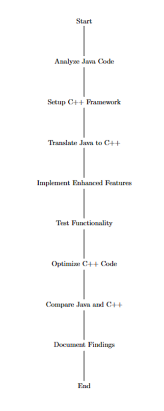

Software Design and Engineering
In this enhancement, I reverse-engineered the Java calculator to create a C++ version. This involved analyzing the Java source code, understanding its logic, and implementing a C++ version with equivalent functionality.
Files
Screenshots and Diagrams
Bitbucket Repository
Access the original Java calculator on Bitbucket: Original Java Calculator (Bitbucket)